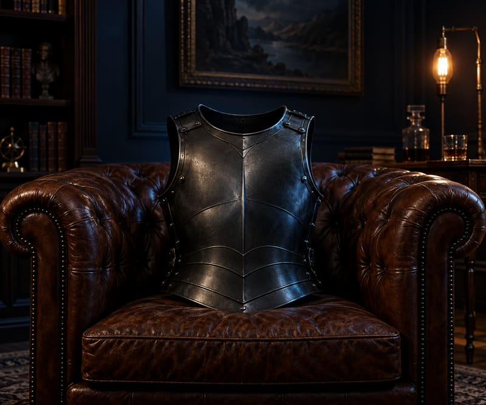

O manual central
Arsenal Homem Blindado
Para quem sabe que algo está errado, mas não sabe o que fazer a partir de hoje.
O ponto de partida. Mostra onde você está deixando brecha e transforma o que você leu em postura e decisão, com exercícios para aplicar no mesmo dia.